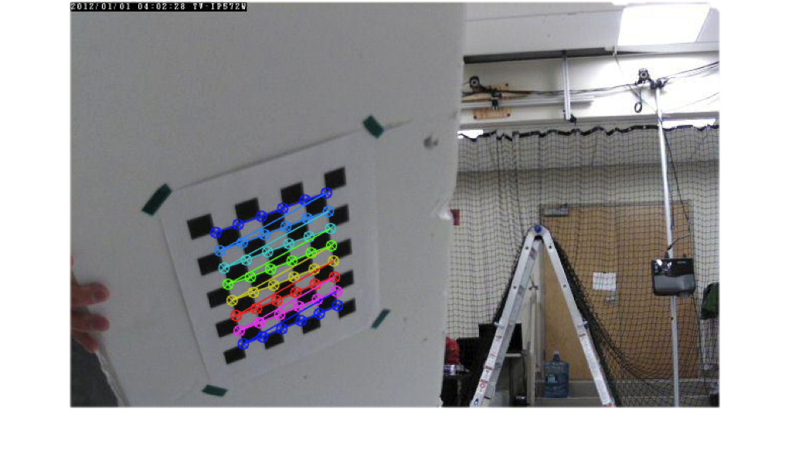
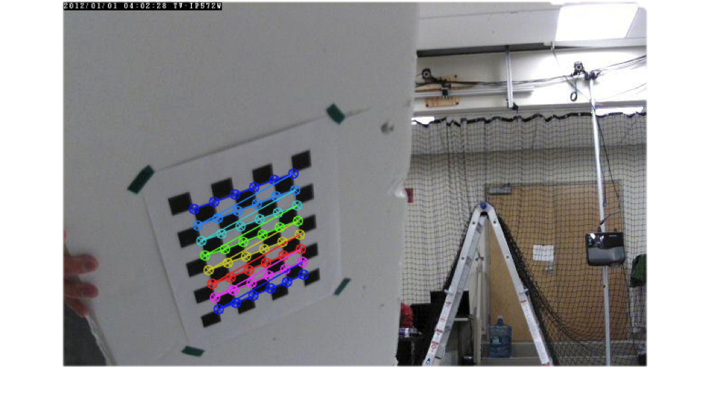

Abstract
The purpose of this project was to develop the computer vision algorithm and pipeline that is capable of estimating the unknown, three-dimensional (3D) pose of simple objects in an environment from a basic video stream. Our group studied two texts on 3D vision ([1] and [2]) and chose to implement pose estimation via the Epipolar constraint with multiple image frames from the video stream. The results include estimation of the unknown depth component of each measured image feature and the estimation of the rotation and translation that relates the camera's location at each image frame. Multiple image frames are used in each depth estimation step to refine the estimations. The final step of the project was to combine 3D estimations from several estimation steps to utilize the entire video stream. This project proved to be a challenge but we have obtained results we are proud to display here. In the future, this type of algorithm will be applied to aerial autonomous vehicles (quadrotors) that will reconstruct their unknown environments using only simple on-board cameras.
Motivation
There is a constant need to accurately estimate the 3D structure of certain features in our environment. For example, consider the 3D models of buildings and landscapes present in Google Maps. Although relatively useful in its current state, the 3D reconstruction is often coarse and noisy due to the lack of resolution in satellite images (Figure 1). Further, for important tasks such as environmental monitoring or surveys, satellite imagery is too infrequent (as well as too coarse) to make useful 3D models over time. Therefore, many communities would benefit by having the means of high resolution autonomous 3D mapping from simple captured video.
Further, in the autonomous robotics communities, some robots are capable of creating similar reconstruction by utilizing Simultaneous Localization and Mapping (SLAM) algorithms. These algorithms generally combine images, inertial measurement units, GPS, and laser range finders in order to completely map unknown environments while localizing the robot in the map's global coordinate frame. Although using all of these sensors can produce impressive results (Figure 1), we believe it is more beneficial to only use images from video to reconstruct environments. This more challenging option would improve SLAM results by creating a way to build maps of robot's surroundings only with on-board cameras in GPS denied or noisy infrared environments.
Method and Implementation
The entire computer vision pipeline will be explained here in detail. Since this was a mathematically detailed project, the theory will be explained in sufficient detail. The 3D structure problem required our group to investigate and implement the following methods:
- Camera Calibration
- Feature Extraction
- Feature Matching and Tracking Over Multiple Frames
- Epipolar Geometry
- Resolving Relative Displacement Ambiguity
- Feature Depth Estimation
- Depth Estimation Refinement with Multiple Frames
- Building A Complete 3D Model
Any code or data sets we generated and will discuss in this section are contained in the /src directory of the submission.
Camera Calibration and Relevant Coordinate Systems
When creating a 3D reconstruction from images, we first must discuss the mathematical relationship between images measured in pixels and the real world measured in world coordinates. If we consider the transition from the world to pixels, we can break the relationship into individual transformations. Please consult Figure 2 for the graphical representation of these transformations. The first being world coordinates to camera coordinates, or the coordinate system aligned with the camera where the x and y axes are aligned with the x and y axes of the image and the positive z axis is aligned with the optical axis of the camera.
$\left[\begin{array}{ccc} X_C \\ Y_C \\ Z_C \\ 1 \\ \end{array}\right] = \left[\begin{array}{ccc} R & T \\ 0 & 1\\ \end{array}\right] \left[\begin{array}{ccc} X_W \\ Y_W \\ Z_W \\ 1 \\ \end{array}\right]$
This relationship includes a generic rotation matrix, $R$ in SO(3), and translation, $T$ in SE(3) from the camera coordinate system to the world's coordinate system. In our project, we assumed the camera coordinate frame of the first image in the video sequence was aligned with the world frame, thus R in this case is simply the identity while T is zero.
The transformation from the camera frame to the image frame represents a perspective transformation that results in a planar coordinate system on the infinite image plane. The units of this image plane are the same as those in the camera coordinate system. Note that the depth of this plane in the camera coordinate system is focal length, $f$, and that there is no depth associated to image plane coordinates. Instead there is an unknown scale factor, $\lambda$, that is exactly equal to the depth of a corresponding feature in the image plane.
$\lambda\left[\begin{array}{ccc} x_I \\ y_I \\ 1 \\ \end{array}\right] = \left[\begin{array}{ccc} f & 0 & 0 \\ 0 & f & 0 \\ 0 & 0 & 1 \\ \end{array}\right] \left[\begin{array}{ccc} X_C \\ Y_C \\ Z_C \\ \end{array}\right]$
Image plane coordinates are mapped onto the actual camera image using the following relationship where ${m_x,m_y}$ are scaling factors for pixels in each image direction, $s$ is the skew factor of the sensor, and ${x_0,y_0}$ are the coordinates of the principal point (the intersection of the optical axis and the pixel plane).
$\left[\begin{array}{ccc} x_P \\ y_P \\ 1 \\ \end{array}\right] = \left[\begin{array}{ccc} m_x & s & x_0 \\ 0 & m_y & y_0 \\ 0 & 0 & 1 \\ \end{array}\right] \left[\begin{array}{ccc} x_I \\ y_I \\ 1 \\ \end{array}\right]$
Finally, these three relationships can be combined into one equation relating world points to the same points in the pixel plane. The combination of the transformations from camera coordinates to the pixel plane is combined into one matrix containing intrinsic camera properties that can be obtained by calibrating our camera beforehand. Also note that the final result equation for the world scene points is only a function of the measured camera features, measured camera properties, an unknown scale factor of which we will estimate.
$\lambda\left[\begin{array}{ccc} x_P \\ y_P \\ 1 \\ \end{array}\right] = \left[\begin{array}{ccc} m_x & s & x_0 \\ 0 & m_y & y_0 \\ 0 & 0 & 1 \\ \end{array}\right] \left[\begin{array}{ccc} f & 0 & 0 \\ 0 & f & 0 \\ 0 & 0 & 1 \\ \end{array}\right] \left[\begin{array}{cccc} 1 & 0 & 0 & 0 \\ 0 & 1 & 0 & 0 \\ 0 & 0 & 1 & 0 \\ \end{array}\right] \left[\begin{array}{ccc} R & T \\ 0 & 1\\ \end{array}\right] \left[\begin{array}{cccc} X_W \\ Y_W \\ Z_W \\ 1 \\ \end{array}\right]$
$\lambda\left[\begin{array}{ccc} x_P \\ y_P \\ 1 \\ \end{array}\right] = \left[\begin{array}{ccc} \alpha_x & fs & x_0 \\ 0 & \alpha_y & y_0 \\ 0 & 0 & 1 \\ \end{array}\right] \left[\begin{array}{cccc} 1 & 0 & 0 & 0 \\ 0 & 1 & 0 & 0 \\ 0 & 0 & 1 & 0 \\ \end{array}\right] \left[\begin{array}{cccc} 1 & 0 & 0 & 0 \\ 0 & 1 & 0 & 0 \\ 0 & 0 & 1 & 0 \\ 0 & 0 & 0 & 0 \end{array}\right] \left[\begin{array}{cccc} X_W \\ Y_W \\ Z_W \\ 1 \\ \end{array}\right]$
or
$\left[\begin{array}{cccc} X_W \\ Y_W \\ Z_W \\ \end{array}\right] = \lambda \left[\begin{array}{ccc} \alpha_x & fs & x_0 \\ 0 & \alpha_y & y_0 \\ 0 & 0 & 1 \\ \end{array}\right]^{-1} \left[\begin{array}{ccc} x_P \\ y_P \\ 1 \\ \end{array}\right] $
or
$\mathbf{X} = \lambda K^{-1} \mathbf{x}$
The camera calibration matrix, $K$, was found by inputing several images of a camera calibration pattern into OpenCV's function, cameraCalibrate . The code we built for this procedure is provided under the /Camera_Calibration Directory. This program automatically reads in image frames from a webcam and saves each frame when the user presses the spacebar. The user should position a camera calibration pattern (figure 3) in front of the camera for each image taken. If the image contains the entire calibration pattern, the points on the pattern are located and saved to a vector of points. Finally, the calibration function uses these points to generate the $K$ matrix along with a vector of distortion coefficients that are used to remove the radial distortion from our camera. The output camera calibration matrix used with the test images from an IP camera is:
$\left[\begin{array}{ccc} 679.1762904713844 & 0 & 329.4494923815807 \\ 0 & 681.184065752318 & 201.8327112232685 \\ 0 & 0 & 1.0000 \end{array}\right]$
 

Feature Extraction, Matching and Tracking
We used points cloud to represent the 3-D scene. In order to compare pairs of images and estimate the unknown depths, we need to first determine the same information represented in each images. This is done by finding key-points or features of an image using standard techniques such as Scale Invariant Feature Transform (SIFT), and Key-points sets matching in sequence of frames.
Scale Invariant Feature Transform (SIFT)
SIFT is patented in the US and the owner is the University of British Columbia. This is an algorithm in computer vision to detect, describe local features and find interest points in images [5]. In figure 4 [6], it shows how it works.


It uses several different size of Gaussian masks, also called octaves, and uses different sigma value for Gaussian filter in each size masks, to do convolutions first, and then subtracts between filtered images filtered by different masks with same size. The reason people use different size of masks or octaves is the masks with greater sigma values can detect larger corner, the masks with smaller sigma value and detect sharp corner. Usually people want to find all possible corners and interested points in the images. The following images show the results from two different data sets. We used OpenCV build in SIFT function to detect interest points. In experiments, the interest points in each frame are ranged from 400 to 600, usually 500.
Interest Points Matching
In two or several consequent images, we need figure out the same object, interest points first, so that will be helpful for the Epipolar Geometry based 3D reconstruction. In this algorithm, at least you need to know the correspondent points in two images. Shown in figure 6. Given two images from different angles, It can calculate the real world position of point X. X is projected in to two screes, Xl and Xr. In order to calculate the X's information, we need to know Xl is mapping to Xr in two different scenes. More details will be shown later.
We started with interested points set matching between two continuous frames. Those two sets of points are detected by SIFT algorithm. Because those two points sets are very similar when the images don't change too much. In addition the new appeared points and disappeared points are not too many. In figure 7 (a and b), there are two examples of two images points matching.
We need to match between two set of interested points, our algorithm is searching the nearest neighbor points using distance minimization. In programming, we used FLANN stands for Fast Library for Approximate Nearest Neighbors.[http://docs.opencv.org/trunk/doc/py_tutorials/py_feature2d/py_matcher/py_matcher.html] It contains a collection of algorithms optimized for fast nearest neighbor search in large datasets and for high dimensional features. For FLANN based matcher, we need to pass two dictionaries which specifies the algorithm to be used, its related parameters etc. First one is IndexParams. For various algorithms, the information to be passed is explained in FLANN docs. As a summary, for algorithms like SIFT.
In figure 7a, we use the raw points matching, which will match all possible points. It comes out with lots of lines, also combined with messy matching. Because the more points you have, the more choices you have, and the "minimal matching" may contain some matching with large distance, even the whole matching is the minimal one. So what we did is setting a threshold for all matching distances. If the distances is larger than the threshold, then we just ignore that. The threshold is adjusted by experiments. And the threshold value will be tuned according to different types of data sets. In figure 7b, we added a threshold in selecting matching lines, which shows smoother result. But the down side is we lost some points. It's a trade off between the threshold and number of good matching points. The more points we have, the more dense the points cloud will be, however, that will also include more messy matching. In our experiments the matching points between two continuous frames are aroud 200 to 400, depends on the data set and threshold value.
Then we were trying to find the same points in a sequence of frames. The more images we use to calculate the position, the more accurate the positions will be. So there's such requirement for multiple frame interest points tracking. The following images show the interest points tracking in a long sequence. It tracks the 1st, 3rd, 5th and the 10th frames. They are not in a continuous order, if we pick up images one by one, there will be more tracking paths than those two images.
Multiple Interest Points Tracking Algorithm
The data structure we are using is a 2-D vector in C++, which can dynamically add new element to each row, or add a new row. I choose this algorithm because there will appear some new points in a certain frame, or some previous points will disappear at some time. It will be easier to dynamically add or delete some elements. As shown in the figure, the green square means the good matching point from the previous one. The red block means bad matching from the previous one. Each row represents the tracking path of one point. Each column implies all points in this frame. The total algorithm works in the following way.
In the beginning, it will start with matching frame #1 and frame #2, and put all matching point into first column and second column. As defined before, at this time, 2-D array is composed of two green columns. Then move on to comparing frame #2 and frame #3, and find all matching points. Because when we compare #1 and #2, we use SIFT to search all interest point, we will keep the same points set of #2, and used that for matching #2 and #3. So this can make sure the matching procedures share the same points set in the continuous matching. After matching #2 and #3, we know the correspondent relation between #2 points set and #3 points set. If the matching point in #2 exist in the 2-D vector(which of course they are located in the last column of the array), then append the correspondent point in #3 points set to the end of row of that point, it means the tracking is still going on, or call this row or this point tracking is still alive. If some points in the #2 don't have a matching pair, it will add a bad point, which shown in red block to the end of that row, it means the tracking is end or dead. If the matching pair between #2 and #3 is a new appear, maybe the point of #2 in the pair doesn't match to some point in #1m but it matches to some point in #3, we will add a new row at the end of the 2-D vector, and the length will be the same as the rows above, which is 3 now (represents #1 #2 and #3's matching or bad points) the last one will be the new appear points and all the previous points will be bad points. We do so since we want to the order of sequence of frames. When the #4 frame interest points come, it will repeat the same steps.
We also invent an optimization method which can guarantee the algorithm can run fast and take less memory space. Maybe you have noticed that if new elements keep coming(it always happens), we are always adding new element or new rows to the end of the rows. What we are doing is deleting the short dead path, and keeping long alive path. Experiments show that, after doing this, number of rows in the 2-D vector is always staying at a stable level, around 600. The most significant affect of this heuristic method is declining the total number of times in the comparing and maintaining operations. The pseudo code is the following.
Initialize 2-D vector
Set the input image string ready
Detection Interest points in #1 image and #2 image
Find matching points between #1 points set and #2 points set
For each matching pair
Add matching pairs as a new row to the end of 2-D vector
End For
For each frame i start from #3
Detection Interest points in #i image
Find matching points between #(i-1) points set and #i points set
For each matching pair
Add matching pairs as a new row to the end of 2-D vector
End For
Delete tracking path with good tracking length smaller than threshold
End While
Epipolar Geometry
Epipolar geometry describes the known geometric relationship between sets of given feature matches amongst a pair of images. In fact, the transformation from image features in one image to the matched image features in another image is linear and is derived as follows. Consider the relationship between any pairs of points in SE(3), $\mathbf{X}_2 = \mathbf{R}_{21} \mathbf{X}_1+T$, where $R$ is some rotation and $T$ is some translation. We can substitute the generic SE(3) coordinates for the relationship derived earlier which represents the measured image coordinates resulting in the following relationship.
$\lambda_2 K^{-1} \mathbf{x}_2 = \lambda_1 \mathbf{R}_{21} K^{-1} \mathbf{x}_1 +T$
Eliminate the added translation by pre-multiplying the entire equation by $\widehat{T}$,
$\lambda_2\widehat{T} K^{-1} x_2 = \lambda_1 \widehat{T} \mathbf{R}_{21} K^{-1} x_1+\widehat{T}T$
where $\widehat{T} = \left[\begin{array}{ccc} 0 & -t_3 & t_2 \\ t_3 & 0 & -t_1 \\ -t_2 & t_1 & 0 \\ \end{array}\right]$ . The product $\widehat{T}T$ is equal to zero because it represents the cross product of vector $T$ with vector $T$. And since the cross product of two equivilant vectors is always zero, this product is also zero.
Now suppose we pre-multiply both sides of the equation by $(K^{-1} x_2)^T$, the resulting equation is then,
$\lambda_2 x_2^T K^{-T} \widehat{T} K^{-1} x_2 = \lambda_1 x_2^T K^{-T} \widehat{T} \mathbf{R}_{21} K^{-1} x_1$.
After careful inspection of the left hand side of this equation, it becomes obvious that $x_2^T K^{-T} \widehat{T} K^{-1} x_2$ is equal to zero. Since generally $x^T y$ represents the dot product of two vectors, this equates to the dot product of vector $x_2^T$ with vector $\widehat{T} x_2$. Matrix $K$ can simply be ignored because it will not change the direction of the vectors. Now $\widehat{T} x_2$ is a vector perpendicular to the plane formed by vector $\widehat{T}$ and vector $x_2$ due to the cross product definition. Thus, since $x_2$ is by definition perpendicular to this vector, the dot product of $x_2$ with $\widehat{T} x_2$ must be zero.
Finally, the relationship can be written as,
$0 = \lambda_1 x_2^T K^{-T} \widehat{T} \mathbf{R}_{21} K^{-1} x_1$
or
$0 = x_2^T K^{-T} \widehat{T} \mathbf{R}_{21} K^{-1} x_1$
or
$0 = x_2^T F x_1$
where $F$ is the Fundamental matrix. The same relationship without the camera calibration matrices is denoted as the Essential matrix, $E$, which takes the form,
$x_2^T E x_1 = 0$
where $E = K^T F K = \widehat{T} \mathbf{R}_{21}$ .
The Fundamental matrix can be estimated using several matched feature pairs (>= 8 in fact) by using a least squares technique. We chose to use the OpenCV function findFundamentalMat instead because this gives the option of using a RAndom SAmple Consensus (RANSAC) algorithm instead. Instead of solving the least squares problem for all points at once (which may result in inverting large matrices), this algorithm randomly picks points and computes the relationship iteratively. Once enough point samples have been used, the best fitting trend will be selected as the correct Fundamental matrix for the data.
In summary so far, given a set of point matches between image pairs we can compute the Fundamental matrix. Futher, given a calibrated camera (or matrix $K$), we can compute the Essential matrix which is a function of the unknown rotation, $\mathbf{R}_{21}$, and unknown translation, $\widehat{T}$, between the camera coordinate frames of each respective image. This is a powerful result because we now have a closed form solution for the 3D geometric relationship between the cameras of two images.
Resolving Relative Displacement Ambiguity
Unfortunately, there is still ambiguity in how we select $\mathbf{R},T$ because there are two solutions for $\mathbf{R},T$ that will always satisfy a given $E$. Geometrically, this equates to a transformation from one camera to the other where the resulting camera is facing 180 degrees in the opposite direction (figure 4). The correct transformation can simply be chosen by selecting both cameras to be pointing in the same direction (to see the same scene) and the depth estimations should all be positive (in front of the camera). The two solutions are defined in [1] to be,
$\mathbf{R} = U\matchbf{R}_Z(+\frac{\pi}{2})^TV^T$ , $\widehat{T} = U\Sigma\mathbf{R}_Z(+\frac{\pi}{2})U^T$
$\mathbf{R} = U\matchbf{R}_Z(-\frac{\pi}{2})^TV^T$ , $\widehat{T} = U\Sigma\mathbf{R}_Z(-\frac{\pi}{2})U^T$
where $U,V$ are generated from the Singular Value Decomposition of $E$, $E = U\Sigma V^T$. Although, $\Sigma$ is instead defined as $diag(1,1,0)$ to ensure $E$ will be composed of an orthonormal matrix $\mathbf{R}$ and a unit vector $T$.

The rotation ambiguity is resolved as follows. Assume we have
$\mathbf{R}_{21} = U\matchbf{R}_Z(+\frac{\pi}{2})^TV^T$ and $\mathbf{R}'_{21} = U\matchbf{R}_Z(-\frac{\pi}{2})^TV^T$,
where $\mathbf{R}_{21}$ and $\mathbf{R}'_{21}$ denote the two solutions of rotation matrix between frame 1 and frame 2. Likely, we have $\mathbf{R}_{32}$, $\mathbf{R}'_{32}$, $\mathbf{R}_{31}$ and $\mathbf{R}'_{31}$. In theory, the rotation matrix between frame 1 and frame 3 should be the product of the rotation matrices between frame 1 and 2, and frame 2 and 3. In other words,
$\exists\mathbf{r}_{21}\in\{\mathbf{R}_{21},\ \mathbf{R}'_{21}\}$, $\mathbf{r}_{32}\in\{\mathbf{R}_{32},\ \mathbf{R}'_{32}\}$, and $\mathbf{r}_{31}\in\{\mathbf{R}_{31},\ \mathbf{R}'_{31}\}$, such that $\mathbf{r}_{31} = \mathbf{r}_{32} * \mathbf{r}_{21}$.
In practice, we first process the frames of interest once, compute all possible 6 rotation matrices for every 3 frames and store them in arrays. Afterwards, we find the true values of $\mathbf{r}_{21}$, $\mathbf{r}_{32}$ and $\mathbf{r}_{31}$ by finding the minimum absolute difference between the absolute value of the product of $\mathbf{r}_{32}$ and $\mathbf{r}_{21}$, and the absolute value of $\mathbf{r}_{31}$, i.e.,
$\{\mathbf{r}_{21},\ \mathbf{r}_{32},\ \mathbf{r}_{31}\} = \mathrm{argmin}\|\|\mathbf{r}_{32} * \mathbf{r}_{21}\| - \|\mathbf{r}_{31}\|\|,\ \forall\mathbf{r}_{21}\in\{\mathbf{R}_{21},\ \mathbf{R}'_{21}\}$, $\mathbf{r}_{32}\in\{\mathbf{R}_{32},\ \mathbf{R}'_{32}\}$, and $\mathbf{r}_{31}\in\{\mathbf{R}_{31},\ \mathbf{R}'_{31}\}$.
One potential problem we may encounter is that the rotation matrices between frame 2 and 3 when we focus on frame 1, 2 and 3, and when we focus on frame 2, 3 and 4 are not consistent. Fortunately, it turns out the rotation matrix is always consistent.
As to the translation ambiguity, it does not matter. Because the translation vector we estimate here is not true value, but up to a constant scale. We will estimate the constant coefficient $\gamma$ as discussed in next section, the sign of this constant will handle the direction of translation.
Feature Depth Estimation (Scene Reconstruction)
The unknown feature depth in images may be calculated once the camera is calibrated, features from two images are obtained and matched correctly, the Essential matrix is determined from the Fundamental matrix, and the correct relative rotation and translation $(\mathbf{R},T)$ between the two cameras is calculated. We chose to estimate the unknown scale factor, $\lambda$, using a least squares method. Recall that this scale factor is related to the camera coordinates with the equation, $\mathbf{X} = \lambda K^{-1} x$, where $x$ is the measured pixel coordinates of a particular feature, $K$ is the camera calibration matrix, and $\mathbf{X}$ is the feature's 3D coordinates in the camera frame.
To begin the least squares method for scene reconstruction [1], suppose we have n matched features among a pair of images. Then the $j^{th}$ feature is related between the two images by,
$\lambda_2^j K^{-1} x_2^j = \lambda_1^j \mathbf{R} K^{-1} x_1^j +\gamma T$ .
Note that the only difference from the previously defined equations is that a $\gamma$ is multiplied to the translation vector, $T$. Since we choose $(\mathbf{R},T)$ assuming T was a unit vector, this only provided the direction while the magnitude, $\gamma$, will be estimated here.
We remove the left hand side of the equation by taking the cross product with $x_2^j$ recalling that the cross product of a vector with itself is zero.
$\lambda_2^j \widehat{x_2^j} K^{-1} x_2^j = \lambda_1^j \widehat{x_2^j} \mathbf{R} K^{-1} x_1^j +\gamma \widehat{x_2^j} T$
$0 = \lambda_1^j \widehat{x_2^j} \mathbf{R} K^{-1} x_1^j +\gamma \widehat{x_2^j} T$
This relationship for each feature match can be rewritten as a system of linear equations where $M^j$ is the matrix of known quantities and $\overline{\lambda^j}$ is the vector of unknown scales.
$M^j \overline{\lambda^j} = \left[\begin{array}{cc} \widehat{x_2^j} \mathbf{R} x_1^j & \widehat{x_2^j} T \end{array}\right] \left[\begin{array}{c} \lambda_1^j \\ \gamma \end{array}\right] = 0$
We then collect all systems of equations for each feature $j$ and combine them into one matrix equation,
$M\overline{\lambda} = \left[\begin{array}{cccccc} \widehat{x_2^1} \mathbf{R} x_1^1 & 0 & \hdots & 0 & 0 & \widehat{x_2^1} T \\ 0 & \widehat{x_2^2} \mathbf{R} x_1^2 & \hdots & 0 & 0 & \widehat{x_2^2} T \\ \vdots & \vdots & \ddots & \vdots & \vdots & \vdots \\ 0 & 0 & \hdots & \widehat{x_2^{n-1}} \mathbf{R} x_1^{n-1} & 0 & \widehat{x_2^{n-1}} T \\ 0 & 0 & \hdots & 0 & \widehat{x_2^n} \mathbf{R} x_1^n & \widehat{x_2^n} T \\ \end{array}\right] \left[\begin{array}{c} \lambda_1^1 \\ \lambda_1^2 \\ \vdots \\ \lambda_1^n \\ \gamma \end{array}\right]=0 $
where $M \in \mathbb{R}^{3n\times(n+1)}$ and $\overline{\lambda} \in \mathbb{R}^{n+1}$. Since this matrix equation takes the form, $Ax=0$, we can use the SVD to find the vector $\overline{\lambda}$ that minimizes this system of equations. The proof for least squares minimization using the SVD is shown in Appendix A.
$M = U_{M} \Sigma_{M} V_{M}^T$
$\overline{\lambda} = V_{M} \left[\begin{array}{c} 0 \\ \vdots \\ 1 \\ \end{array}\right]$
Finally, the solution for $\overline{\lambda}$ is given by the last column of $V_{M}$.
This result shows that first estimation of feature depth can now be calculated $\mathbf{X} = \lambda K^{-1} x$. We plotted our first depth estimation results from this step over the original images in order to replicate the depth maps provided by a RGB-D sensor (figure 11). The calculated depth scales were normalized between 0 and 1 for plotting purposes where the closest depth is shown as blue and the farthest depth is shown as green. The 3D reconstruction of this preliminary estimation is shown in the Results seciton.
Refinement of the Depth Estimation
Although this was a mathematically rigorous, and correct, estimation of the unknown scale factors, unfortunately errors in our reconstruction will still be present due to error in feature extraction, feature matching, camera calibration, or the selection of $(\mathbf{R},T)$. We can correct some of the errors by taking advantage the video stream, meaning we can process multiple frames (instead of only two) that are guaranteed to only change the image slightly over time (due to relatively high frame rate). In terms of the reconstruction, this means that the camera positions for each sequential frames have small baselines. It is understood that a large $(\mathbf{R},T)$ should produce a better depth estimation, however when practically matching features between two images like this, the matching error will be poor. This refinement uses multiple images with small baselines to iteratively refine the possible poor initial guess of $(\mathbf{R},T)$.
We begin looking at the matches in the sequence of images frames with same relationship between pairs of image features. Please note that I will drop the $K$ matrix because I am assuming $x_i^j$ is the coordinate of the feature in the image plane, or $K^{-1}x_i^j$. Suppose there are $n$ features in each image in the sequence of $m$ images and $j$ is the index of the current feature and $i$ is the index of the current image. The relationship between the $j^{th}$ feature of image 1 and image $i$ is then,
$\lambda_i^j x_i^j = \lambda_1^j \mathbf{R_i} x_1^j+ T_i$ .
Following the same procedure from depth estimation, we remove the left hand side of the equation by taking the cross product with $x_i^j$.
$0 = \lambda_1^j \widehat{x_i^j} R_i x_1^j + \widehat{x_i^j}T_i$ .
This cross product can also be written as,
$0 = \lambda_1^j {x_1^j}^T \otimes \widehat{x_i^j} \mathbf{R_i^s} + \widehat{x_i^j} T_i$
where $\otimes$ is the Kronecker product and $\mathbf{R_i^s}$ is the vector version of matrix $\mathbf{R_i}$. We define $\alpha_0^j = \frac{1}{\lambda_1^j}$, where the subscript 0 denotes the initial iteration of the algorithm. Similarly, $\alpha^j = \frac{\alpha_k^j}{\alpha_k^1} = \frac{\lambda^1}{\lambda^j}$ for each consecutive iteration. Again, following the procedure form depth estimation, this equation can be made into a system of linear equations and arranged into matrix form resulting in the following relationship,
%$P_{i} \left[\begin{array}{c} \mathbf{R_i^s} \\ T_{i} \end{array}\right] = \left[\begin{array}{cc} {x_1^1}^T \otimes \widehat{x_i^1} & \alpha^1 \widehat{x_i^1} \\ {x_1^2}^T \otimes \widehat{x_i^2} & \alpha^2 \widehat{x_i^2} \\ \vdots & \vdots \\ {x_1^n}^T \otimes \widehat{x_i^n} & \alpha^n \widehat{x_i^n} \\ \end{array}\right] \left[\begin{array}{c} \mathbf{R_i^s} \\ T_{i} \end{array}\right] = 0 $ .
This matrix will be computed upon each iteration of the refinement algorithm. Each $(\mathbf{R_i^s}, T_{i})$ can be computed using the least squares minimization technique (Appendix-A) and the SVD of $P$,
$P_{i} = U_{P_i} \Sigma_{P_i} V_{P_i}^T$
$\left[\begin{array}{c} \tilde{\mathbf{R_{i}^{s}}} \\ \tilde{T_{i}} \end{array}\right] = V_{P_i} \left[\begin{array}{c} 0 \\ \vdots \\ 1 \\ \end{array}\right]$
These solutions are only estimates of the correct $(\mathbf{R_i}, T_{i})$ because $\mathbf{R_i}$ must be an orthonormal rotation matrix in SO(3). The final estimates are calculated as [1],
$\tilde{\mathbf{R_i}} = U_{i} S_{i} V_{i}^{T}$
$\mathbf{R_i} = sign(det(U_i V_{i}^{T})) U_i V_{i}^{T}$
$T_i = \frac{sign(det(U_i V_{i}^{T}))}{\sqrt[3]{det(S_{i})}\qquad} \tilde{T_i}$
Finally, we may update our unknown depth scale factors based on the new estimations of $(\mathbf{R_i}, T_{i})$ ,
$\alpha_{k+1}^j = -\frac{\sum\limits_{i=2}^m (\widehat{x_i^j} T_i)^T \widehat{x_i^j} \mathbf{R_i} x_i^j }{\sum\limits_{i=2}^m \|\widehat{x_i^j} T_i\|^2}$
Termination of the iterative algorithm is determined by comparing the reprojection error calculated with the new scale parameters. Intuitively, once we have a new scale we can compute new 3D coordinates of points in the first frame rotated into the $i^{th}$ frame. The $\Pi$ operator denotes the planar perspective of these 3D coordinates so that we can compare the $i^{th}$ to the projection of the first image into the $i^{th}$ image. Once this reprojection error is sufficiently small, the algorithm is stopped.
$e_r = \frac{1}{mn} \sum\limits_{i=1}^m \sum\limits_{j=1}^n \| x_i^j - \Pi(\lambda_{1 k+1}^j \mathbf{R_i} x_1^j+T_i) \|^2$
Algorithmically, we implemented this refinement in the following manner,
While the reprojection error is greater than some threshold
For each image in the set
Assemble the P matrix
End For
Solve for new R and T estimate using least squares (SVD)
Compute new scale factor estimates
Compute new reprojection error with new scale estimates
End While
We demonstrate this process in the Results section with multiple camera positions and orientations visualized against the corresponding 3D data points.
Building the 3D Model
The last portion of our computer vision pipeline includes building the 3D model visualization so that we may be able to compare our results to our own intuition about the scene. The entire algorithm was implemented in MATLAB because 3D plotting proved to be difficult in C++ (although we do have everything minus the 3D visualization in C++ as well for the submission). Examples are available in the Results Section.
The first step in 3D plotting was to choose a global reference frame for the reconstructed data. It would be nice to have the data aligned to a global reference frame, for example where the vertical axis of the data corresponds to our vertical axis (up), however this is impossible without some knowledge of the environment. Instead, the plotting environment was chosen with respect to the first frame in the video, thus each reconstruction from a set of images is transformed back to the first camera frame. It is not unreasonable to assume the user would start off every video holding the camera in a logical position (i.e., horizontal to the ground) so that the reconstruction would make more sense.
The coordinate system of each camera frame in the plot is shown as a red (x-axis), green (y-axis), and blue arrow (z-axis or optical axis) where the origin is the camera center. Recall that the camera coordinate system is measured in world coordinates and not pixels. The 3D points are displayed with the same normalized color format as the depth images for consistency. When multiple images are used to estimate the depths, multiple camera coordinate systems are shown on the plot and are numbered to avoid confusion.
Experiments
Resolving Relative Displacement Ambiguity
We run an experiment on image_0040.jpg through image_0076.jpg under 2014-12-02_Office_Scene folder, 37 frames in total. We compute the relative displacement for every 4 frames so that the variances of the estimations are small enough. After processing the frames of interest once, we compute
$\mathbf{R}_{4,0},\ \mathbf{R}_{8,4},\ \cdots,\ \mathbf{R}_{32,28}$, and $\mathbf{R}'_{4,0},\ \mathbf{R}'_{8,4},\ \cdots,\ \mathbf{R}'_{32,28}$,
where $\mathbf{R}_{i+4,i}$ and $\mathbf{R}'_{i+4,i}$ are two possible solutions of the rotation between frame i and i+4. We also compute the relative displacement for every 8 frames to determine the rotation matrices uniquely as discussed above. They are
$\mathbf{R}_{8,0},\ \mathbf{R}_{16,8},\ \cdots,\ \mathbf{R}_{36,28}$, and $\mathbf{R}'_{8,0},\ \mathbf{R}'_{16,8},\ \cdots,\ \mathbf{R}'_{36,28}$.
We take frame 0, 4, 8 for example. We have
$\mathbf{R}_{4,0} = \begin{bmatrix} 0.9990 & 0.0054 & -0.0442 \\ -0.0020 & 0.9971 & 0.0755 \\ 0.0445 & -0.0753 & 0.9962 \\ \end{bmatrix},\ \mathbf{R}'_{4,0} = \begin{bmatrix} -0.9224 & -0.2231 & 0.3153 \\ -0.2359 & -0.3210 & -0.9172 \\ 0.3058 & -0.9204 & 0.2435 \\ \end{bmatrix},$
$\mathbf{R}_{8,4} = \begin{bmatrix} -0.9903 & 0.1245 & -0.0612 \\ 0.0500 & -0.0906 & -0.9946 \\ -0.1293 & -0.9881 & 0.0835 \\ \end{bmatrix},\ \mathbf{R}'_{8,4} = \begin{bmatrix} 0.9988 & -0.0199 & -0.0452 \\ 0.0232 & 0.9971 & 0.0727 \\ 0.0436 & -0.0736 & 0.9963 \\ \end{bmatrix},$
$\mathbf{R}_{8,0} = \begin{bmatrix} -0.9959 & -0.0038 & 0.0903 \\ -0.0077 & -0.9918 & -0.1274 \\ -0.0901 & 0.1276 & -0.9877 \\ \end{bmatrix},\ \mathbf{R}'_{8,0} = \begin{bmatrix} 0.9974 & -0.0355 & -0.0633 \\ 0.0532 & -0.2355 & 0.9704 \\ 0.0494 & 0.9712 & 0.2330 \\ \end{bmatrix}.$
The product of $\mathbf{R}'_{8,4}$ and $\mathbf{R}_{4,0}$ is
$\begin{bmatrix} 0.9958 & -0.0110 & -0.0907 \\ 0.0244 & 0.9889 & 0.1467 \\ 0.0880 & -0.1482 & 0.9850 \\ \end{bmatrix}$
which is very close to $\mathbf{R}_{8,0}$ up to sign. Therefore, we conclude that $\mathbf{R}'_{8,4}$ and $\mathbf{R}_{4,0}$ are most likely to be the true rotation matrices.
Feature Depth Estimation and Refinement (Scene Reconstruction)
Depending on the exact image sets used, the estimated scales can take negative signs. This means that the resulting reconstruction in the camera frame will be equal to $\mathbf{X} = -\lambda K^{-1} \mathbf{x}$. The problem is it is not intuitive to estimate a negative depth of an image feature because it must reside in front of the camera to be imaged in the first place. After numerous example images, it has been noticed that simply reversing the sign on the resulting depth estimations fixes this problem and aligns the data correctly. We believe that this is due to the assumption during the least squares fitting process. Since we only require the resulting the norm of $\overline{\lambda}$ is 1 (unit vector), the vector can take any sign, both positive and negative. The simple solution is of course to manually switch the sign to the correct option.
The number of images used in the refinement sequence was also tested. There are two major concerns here, we want to use as many images as possible to refine the estimations because more images will yield more data about the relative camera poses. However, with more images, there are always fewer features to correctly identify and track, meaning lower estimation quality. Further, if we choose too many images that are too close together (i.e. exactly sequential video frames) the feature tracking performance will be good but the depth estimation will suffer. This is due to the small baselines between sequential video frames.
After experimentation we found the best result was to use every 4th frame and to use approximately 10 frames in the refinement sequence. Using every 4th frame allowed for noticable movement between cameras and helped the initial estimation for the refinement. 10 frame sequences tended to be the number in order to keep roughly 50 features matched over that entire sequence. This method is also beneficial in terms of computation because we can collect our sequence of 10 images, process for features and calculate the reconstruction while the next 10 frame sequence is being recorded. Although we never got the algorithm to function properly on-line, this planning makes it feasible in the future.
A lot of time was spent experimenting with the 3D reconstruction plots because it is an important verification method of our results. A problem arised when chosing a global reference frame. We initially selected that to be the default MATLAB plotting axis, imagine an x-y ground plane with z pointing up. However, this means that the data is positioned as if you were imaging the sky which is not intuitive. Thus we had to guess at the initial camera location in this MATLAB plotting coordinate system. For example, I plotted the initial camera frame with the z-axis along the y-axis of the MATLAB plot, appearing like it was positioned perpendicular to the ground. This requires that everything plotted to have been rotated by a rotation matrix about the x-axis by $-\frac{\pi}{2}$ radians. It was simple once determined but took some time to get all the data aligned correctly.
Results
Resolving Relative Displacement Ambiguity
We run an experiment on image_0040.jpg through image_0076.jpg under 2014-12-02_Office_Scene folder, 37 frames in total. We compute the relative displacement for every 4 frames. The true rotation matrices, denoted by $\mathcal{R}_{i+4,i}$ are shown as follows. Here $\mathbf{R}_{i+4,i}$ and $\mathbf{R}'_{i+4,i}$ are two possible solutions of the rotation between frame i and i+4.
$\mathcal{R}_{\ 4,\ 0} = \mathbf{R}_{\ 4,\ 0} = \begin{bmatrix} 0.9991 & 0.0054 & -0.0442 \\ -0.0020 & 0.9971 & 0.0755 \\ 0.0445 & -0.0753 & 0.9962 \\ \end{bmatrix}$
$\mathcal{R}_{\ 8,\ 4} = \mathbf{R}'_{\ 8,\ 4} = \begin{bmatrix} 0.9988 & -0.0199 & -0.0452 \\ 0.0232 & 0.9971 & 0.0727 \\ 0.0436 & -0.0736 & 0.9963 \\ \end{bmatrix}$
$\mathcal{R}_{12,\ 8} = \mathbf{R}'_{12,\ 8} = \begin{bmatrix} -0.9986 & 0.0111 & -0.0513 \\ -0.0108 & -0.9999 & -0.0064 \\ 0.0514 & 0.0058 & -0.9987 \\ \end{bmatrix}$
$\mathcal{R}_{16,12} = \mathbf{R}_{16,12} = \begin{bmatrix} -0.9946 & 0.0682 & -0.0783 \\ -0.0692 & -0.9976 & 0.0099 \\ 0.0774 & -0.0152 & -0.9969 \\ \end{bmatrix}$
$\mathcal{R}_{20,16} = \mathbf{R}_{20,16} = \begin{bmatrix} 0.9979 & -0.0288 & 0.0576 \\ 0.0297 & 0.9994 & -0.0149 \\ -0.0571 & 0.0166 & 0.9982 \\ \end{bmatrix}$
$\mathcal{R}_{24,20} = \mathbf{R}_{24,20} = \begin{bmatrix} 0.9996 & 0.0152 & -0.0230 \\ -0.0151 & 0.9999 & 0.0052 \\ 0.0231 & -0.0048 & 0.9997 \\ \end{bmatrix}$
$\mathcal{R}_{28,24} = \mathbf{R}_{28,24} = \begin{bmatrix} 0.9930 & -0.0127 & 0.1171 \\ 0.0108 & 0.9998 & 0.0167 \\ -0.1172 & -0.0153 & 0.9930 \\ \end{bmatrix}$
$\mathcal{R}_{32,28} = \mathbf{R}_{32,28} = \begin{bmatrix} 0.9921 & -0.0204 & -0.1240 \\ 0.0227 & 0.9996 & 0.0170 \\ 0.1236 & -0.0197 & 0.9921 \\ \end{bmatrix}$
By that, we are able to compute the rotation between frame 0 and frame 4*i by simply multiplying them.
Feature Depth Estimation and Refinement (Scene Reconstruction)
Discussion
Resolving Relative Displacement Ambiguity
When we compute the rotation matrix and translation vector, the results are correct up to sign sometimes. This is related to SVD in C++. Assume $\mathbf{M} = \mathbf{U}\mathbf{\Sigma}\mathbf{V}^\top$, then if we are asked to decompose $\mathbf{-M}$, it is $\mathbf{U}\mathbf{\Sigma}\mathbf{(-V)}^\top$ in MATLAB, but $\mathbf{(-U)}\mathbf{\Sigma}\mathbf{V}^\top$ in C++. Hence the sign is not the same in theory and in practice. We simply ignore this issue in our project.
The rotation ambiguity is resolved after we process frames of interest once. However, because one needs only three consecutive frames to determine the true value of the rotation matrix, we should be able to find it after we have processed the next two frames. In other words, the rotation between frame i and i+1 could be identified when we process frame i+2. In that case, our program would be more real-time.
Feature Depth Estimation and Refinement (Scene Reconstruction)
One of the most frusterating characteristics of this project is the scale ambiguity involved when reconstructing a scene. This is noticed in all of our reconstruction results in the form of nonsensical units on the plots. This is because all of the math we have shown is proven up to a scale factor, meaning we can not actually tell is an object is twice as far a way and twice as big, or twice as close and half as big. We can reconstruct the correct relative reconstruction (with respect to the camera) but can not say exactly how large something is. One way to improve upon this would be have the user calibrate two points after the arbitrary reconstruction is finished. For example, if we knew the size of a standard door frame, we could select the door frame points to be 2 meters and the entire reconstruction would be scaled perfectly. In the future we can imagine using some sort of segmentation to locate key objects in the environmental reconstruction (doors, chairs, stairs, etc.) and scale the model based on what known objects exist.
The refinement algorithm presented in [1] also proved difficult to implement. It turns out that the iterative calculations is sensitive to the scale factors used. Since the scaling $\alpha$ is normalized by the first component on each iteration, the output $\lambda$ scales are also normalized, resulting in 3D coordinates that do no seem to make sense. Instead, I used the refinement to get a better estimate of the correct rotation and translation from camera frame 1 to each other camera frame. These corresponding results appear to be consistent with the test images used, proving the refinement is of value.
Although we completed our task of 3D reconstruction from video, we was hoping to make this a more user friendly algorithm. Unfortunately we have noticed many details such as arbitrary scales or the difficult selection of rotations and translations that make this a hard problem for every scene and any video. The fact that the camera shooting the video must be calribrated is also challenging because zoom lens must remain fixed and the calibrations are never perfect. Another observation was the types of scenes we were able to reconstruct. Looking at the results show that each scene has objects placed in a very general setting, with ample depth distribution among the objects. We found that is the scene was too planar the reconstruction would completely fail. Thus there must already be depth present in the world scene. Although one could explore the homography when assuming planar scenes, it makes this implementation less robust. We also would have liked to use the entire video stream to make a truely dense 3D model. However since the depth estimation itself proved to be difficult enough, we were not able to complete this task. Moreover, specific research areas exist on this problem alone, aligning large 3D datasets in the most optimal way so completing it here correctly would have been challenging.
In the end, we are happy we stuck with this project and are proud of the results. Our algorithm is obviously under-performing when compared to other good reconstruction software available, however the fact that we can create correct 3D reconstruction from only video with NO depth or world scene information is still impressive to me.
Conclusion
This was a both challenging and satisfying final project for computer vision. On one hand we took a very rigorous approach in learning about the entire 3D reconstruction process from a mathematical perspective. We also completely implemented the theory into a working algorithm that provided correct results. Conversly, the results of the final project were not as impressive as we had hoped due to the complexity of the process and just 3D vision techniques in general. In the future, Eric plans to continue using 3D vision methods (specifically Epipolar geometry) in order to control aerial vehicles with downward facing cameras.
We have thoroughly enjoyed collaborating on this project as well and hope this document may be useful for someone in the future trying to understand 3D reconstruction from images. Overall, Yu worked on the feature matching and tracking, Jun worked on the rotation/translation ambiguity problem, and Eric worked on the 3D scene reconstruction and visualization. We would like to thank Ajjen Joshi and Professor Betke as they have been extremely helpful. Coming from the Engineering department at BU I can now say I have learned a lot about computer vision from a computer science perspective. Thank you!
References
[1] Y. Ma, S. Soatto, J. Kosecka, and S. S. Sastry. An Invitation to 3D Vision. Springer, 2004.
[2] R. Hartley, A. Zisserman. Multiple View Geometry in Computer Vision. Cambridge, UK: Cambridge UP, 2003.
[3] Photos. Apple Insider. http://photos.appleinsider.com/GoogleMaps.062913.jpg.
[4] Visual Odometry For GPS-Denied Flight. Robust Robotics Group. CSAIL, Massachussetts Institute of Technology, Boston, MA. http://groups.csail.mit.edu/rrg/uploads/Main/VisualOdometryForGPS-DeniedFlight/stairway_SLAM_Model.jpg.
[5] https://en.wikipedia.org/wiki/Scale-invariant_feature_transform.
[6] http://docs.opencv.org/master/doc/py_tutorials/py_feature2d/py_sift_intro/py_sift_intro.html.
[7] https://en.wikipedia.org/wiki/Point_cloud#mediaviewer/File:Point_cloud_torus.gif.
Appendix A - Least Squares Using the SVD
Suppose we have a linear system of equations that takes the form $Ax=0$ and we wish to find the vector $x$ such that the product $Ax$ is minimized. Given $ A \in \mathbb{R}^{n \times m}$, we seek to minimize the argument,
$min \|A x \|_2$ such that $\|x\|_2 = 1$
where $x$ is chosen as a unit vector. We substitute $A$ for the Singular Value Decomposition (SVD) of $A$ since $A=U_A \Sigma_A V_A^T$ where,
$U_A \in \mathbb{R}^{n \times n}$, $\Sigma_A \in \mathbb{R}^{n \times m}$, and $V_A \in \mathbb{R}^{m \times m}$.
Thus the minimization argument is now,
$min \|U_A \Sigma_A V_A^T x \|_2$ such that $\|x\|_2 = 1$ .
From the definition of the SVD, $\| U_A \|_2 = 1$ and $\| V_A^T \|_2 = 1$. Further, $\| V_A^T x \|_2 = 1$ because we chose $x$ as a unit vector. Thus we may rearrange the minimization argument in the following way,
$min \| \Sigma_A V_A^T x \|_2$ such that $\| V_A^T x \|_2 = 1$
or
$min \| \Sigma_A y \|_2$ such that $\| y \|_2 = 1$
or
$min \begin{Vmatrix} \left(\begin{array}{ccc} \sigma_1 & & \\ & \ddots & \\ & & \sigma_m \end{array}\right)\left(\begin{array}{c} y_1 \\ \vdots \\ y_m \\ \end{array}\right) \end{Vmatrix}_2$ such that $\begin{Vmatrix}\left(\begin{array}{c} y_1 \\ \vdots \\ y_m \\ \end{array}\right) \end{Vmatrix}_2 = 1$
Note that only of the identity portion of $\Sigma$ is used because the rest of the matrix will be zeros, this portion of $\Sigma$ has dimensions $m\times m$. The singular values contained in $\Sigma$ are always arranged from highest to lowest along the diagonal due to the nature of the SVD, thus we may choose y as a vector that only multiplies by this smallest singular value.
$min \begin{Vmatrix} \left(\begin{array}{ccc} \sigma_1 & & \\ & \ddots & \\ & & \sigma_p \end{array}\right)\left(\begin{array}{c} 0 \\ \vdots \\ 1 \\ \end{array}\right) \end{Vmatrix}_2$ such that $\begin{Vmatrix}\left(\begin{array}{c} 0 \\ \vdots \\ 1 \\ \end{array}\right) \end{Vmatrix}_2 = 1$
Finally, recalling the relation $y = V_A^T x$,
$ x = V_A y$
or
$ x = V_A \left(\begin{array}{c} 0 \\ \vdots \\ 1 \\ \end{array}\right)$
or
vector $x$ should be chosen as the last column of $V_A$ in order to minimize the equation $Ax=0$.